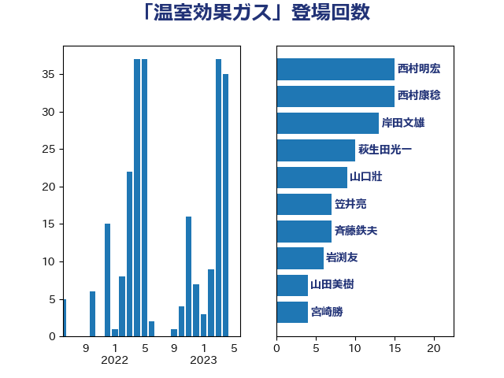

単語「温室効果ガス」

| 小泉進次郎 | 自由民主党 | 16 回 |
| 萩生田光一 | 自由民主党 | 11 回 |
| 岸田文雄 | 自由民主党 | 10 回 |
| 山口壯 | 自由民主党 | 9 回 |
| 徳永エリ | 立憲民主党 | 8 回 |
| 竹谷とし子 | 公明党 | 8 回 |
| 田村貴昭 | 日本共産党 | 7 回 |
| 笠井亮 | 日本共産党 | 7 回 |
| 斉藤鉄夫 | 公明党 | 5 回 |
| 岩渕友 | 日本共産党 | 4 回 |
| 笹川博義 | 自由民主党 | 4 回 |
| 梶山弘志 | 自由民主党 | 3 回 |
| 源馬謙太郎 | 立憲民主党 | 3 回 |
| 紙智子 | 日本共産党 | 3 回 |
| 菅義偉 | 自由民主党 | 3 回 |
| 音喜多駿 | 日本維新の会 | 3 回 |
| 室井邦彦 | 日本維新の会 | 2 回 |
| 小池晃 | 日本共産党 | 2 回 |
| 山下芳生 | 日本共産党 | 2 回 |
| 山口晋 | 自由民主党 | 2 回 |
| 山口那津男 | 公明党 | 2 回 |
| 山添拓 | 日本共産党 | 2 回 |
| 工藤彰三 | 自由民主党 | 2 回 |
| 平山佐知子 | 無所属 | 2 回 |
| 森本真治 | 立憲民主党 | 2 回 |
| 櫛渕万里 | れいわ新選組 | 2 回 |
| 浅野哲 | 国民民主党 | 2 回 |
| 浜野喜史 | 国民民主党 | 2 回 |
| 田嶋要 | 立憲民主党 | 2 回 |
| 矢倉克夫 | 公明党 | 2 回 |
| 神津たけし | 立憲民主党 | 2 回 |
| 細田健一 | 自由民主党 | 2 回 |
| 長浜博行 | 無所属 | 2 回 |
| 三木亨 | 自由民主党 | 1 回 |
| 下野六太 | 公明党 | 1 回 |
| 中島克仁 | 立憲民主党 | 1 回 |
| 中川康洋 | 公明党 | 1 回 |
| 中野洋昌 | 公明党 | 1 回 |
| 井上貴博 | 自由民主党 | 1 回 |
| 伊藤渉 | 公明党 | 1 回 |
| 佐藤茂樹 | 公明党 | 1 回 |
| 務台俊介 | 自由民主党 | 1 回 |
| 吉田とも代 | 日本維新の会 | 1 回 |
| 大岡敏孝 | 自由民主党 | 1 回 |
| 宮崎雅夫 | 自由民主党 | 1 回 |
| 小林茂樹 | 自由民主党 | 1 回 |
| 尾身朝子 | 自由民主党 | 1 回 |
| 山岡達丸 | 立憲民主党 | 1 回 |
| 岡田克也 | 立憲民主党 | 1 回 |
| 平木大作 | 公明党 | 1 回 |
| 杉久武 | 公明党 | 1 回 |
| 武部新 | 自由民主党 | 1 回 |
| 比嘉奈津美 | 自由民主党 | 1 回 |
| 水岡俊一 | 立憲民主党 | 1 回 |
| 池畑浩太朗 | 日本維新の会 | 1 回 |
| 清水真人 | 自由民主党 | 1 回 |
| 清水貴之 | 日本維新の会 | 1 回 |
| 渡辺猛之 | 自由民主党 | 1 回 |
| 滝波宏文 | 自由民主党 | 1 回 |
| 片山大介 | 日本維新の会 | 1 回 |
| 田名部匡代 | 立憲民主党 | 1 回 |
| 石井啓一 | 公明党 | 1 回 |
| 石井苗子 | 日本維新の会 | 1 回 |
| 石原宏高 | 自由民主党 | 1 回 |
| 石川博崇 | 公明党 | 1 回 |
| 磯崎仁彦 | 自由民主党 | 1 回 |
| 神谷裕 | 立憲民主党 | 1 回 |
| 福島伸享 | 無所属 | 1 回 |
| 稲田朋美 | 自由民主党 | 1 回 |
| 空本誠喜 | 日本維新の会 | 1 回 |
| 美延映夫 | 日本維新の会 | 1 回 |
| 荒井優 | 立憲民主党 | 1 回 |
| 西岡秀子 | 国民民主党 | 1 回 |
| 里見隆治 | 公明党 | 1 回 |
| 野上浩太郎 | 自由民主党 | 1 回 |
| 鈴木義弘 | 国民民主党 | 1 回 |
| 長友慎治 | 国民民主党 | 1 回 |
| 青木愛 | 立憲民主党 | 1 回 |
| 高橋光男 | 公明党 | 1 回 |